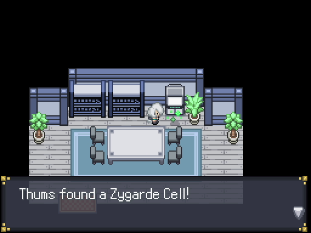
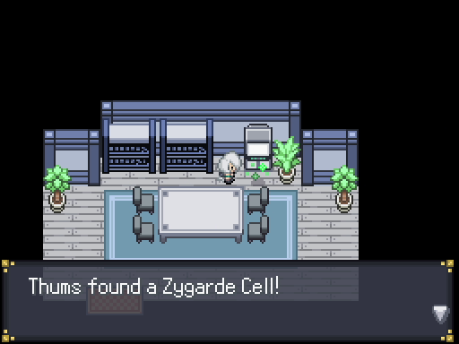
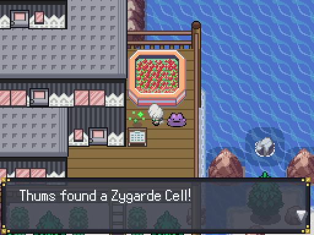
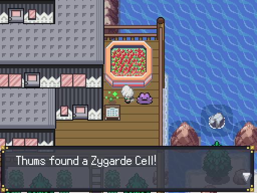

Akuwa Town
Akuwa Town

Once you enter Akuwa Town, you and Aelita will find that the town is completely empty aside from the old man laying down on the road. Aelita will task you with getting the defibrillator, but we can do a few other things before we get to the old man. Walk south past the Pokemon center and then go right. You'll find an abandoned egg that contains a Ducklett.
 Head back to the top left corner, and you'll find TRUCKGUY and in the house behind him a Zygarde Cell. From TRUCKGUY, head south and onto the beach. You can battle Corsola
Head back to the top left corner, and you'll find TRUCKGUY and in the house behind him a Zygarde Cell. From TRUCKGUY, head south and onto the beach. You can battle Corsola here if you interact with it. Importantly, if you have a Pokemon with the move Thief (Mighthyena is a good choice), you can farm Heart Scales from the Luvdisc here with the Good Rod. Head up along the beach and you'll find a building. Next to the building is another Zygarde Cell and if you found Ditto
here if you interact with it. Importantly, if you have a Pokemon with the move Thief (Mighthyena is a good choice), you can farm Heart Scales from the Luvdisc here with the Good Rod. Head up along the beach and you'll find a building. Next to the building is another Zygarde Cell and if you found Ditto four times before this, it'll be here for you to battle and catch. We'll need it for a few sidequests.
four times before this, it'll be here for you to battle and catch. We'll need it for a few sidequests.
That's all we can do since there's no one else here. Head back to the Pokemon Center, and you can heal yourself up with the machine in the back and grab the defibrillator
 while you're here. Go back out and give it to Aelita, who will revive the old man. He'll be grumpy about being woken up, and you and Aelita can check out the town a bit more. Head back to the lab by the beach and talk to Aelita again, and she'll suggest to meet up in the Akuwa Aquarium in the northern part of town. Heading to the aquarium will trigger the story to progress, and we won't be able to return here for quite a while, so don't go there yet. We'll wrap up a few sidequests here first, including getting a mystery Pokemon.
while you're here. Go back out and give it to Aelita, who will revive the old man. He'll be grumpy about being woken up, and you and Aelita can check out the town a bit more. Head back to the lab by the beach and talk to Aelita again, and she'll suggest to meet up in the Akuwa Aquarium in the northern part of town. Heading to the aquarium will trigger the story to progress, and we won't be able to return here for quite a while, so don't go there yet. We'll wrap up a few sidequests here first, including getting a mystery Pokemon.